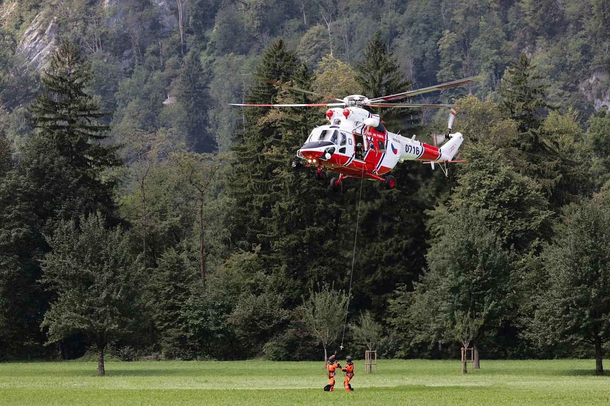
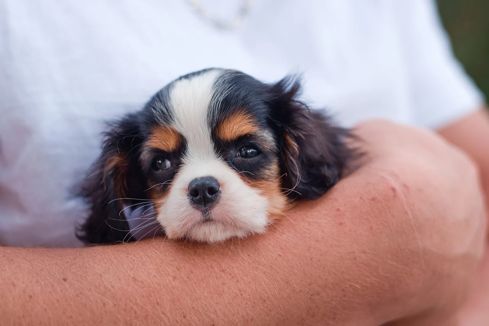

Why Choose Us?

Compassionate Rescue
We provide a safe haven for abandoned and neglected animals, giving them a second chance at life.

Rehabilitation
Our team ensures that every pet receives medical care, training, and love to prepare them for adoption.

Adoption Community
We connect pet lovers with their perfect companions, fostering lifelong bonds.